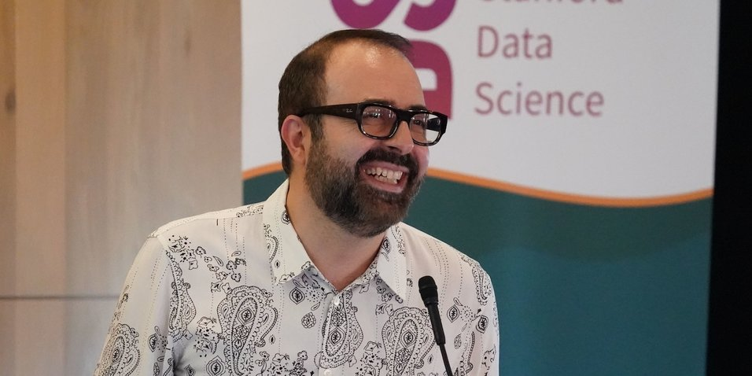

Advancing the interdisciplinary study of modern, complex market platforms — combining algorithm design, economics, machine learning, and operations research.

Amin Saberi is honored with the ACM SIGecom Test of Time Award for both 2024 and 2025, recognizing his foundational contributions to algorithmic economics.
Juliane Begenau and Shoshana Vasserman have been named 2026 Sloan Research Fellows, recognizing their outstanding early-career research in economics.
Itai Ashlagi wins the Lanchester Prize, one of the most prestigious honors in operations research, for his landmark work on matching markets.